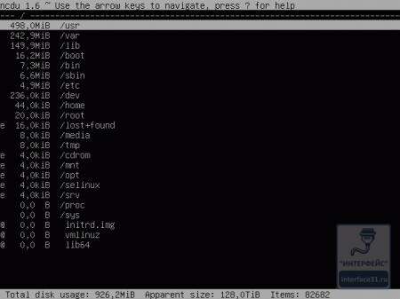

apt-get install ncdu
Запущенная без параметров утилита выводит информацию о текущей папке, но так как нас интересует вся файловая система, то в качестве параметра укажем корневую директорию:
ncdu /
После непродолжительных вычислений утилита выведет иерархический список директорий, начиная с самого большого размера:

Ну это совсем другое дело. Сразу видно чем именно занято дисковое пространство. Утилита интерактивна, мы можем перемещаться по дереву, входить в папки, изменять представление информации, удалять ненужные файлы и директории. Все возможности программы можно узнать вызвав встроенную справку:
Как видим, утилита проста, но весьма богата возможностями, например можно быстро включить более наглядное представление данных:
Теперь вопрос чем занято дисковое пространство и что с этим делать решается буквально в считанные минуты. На наш взгляд данная утилита должна быть в арсенале каждого системного администратора.
И в заключение мы подготовили небольшой сюрприз: небольшой видеодоклад, который, надеемся, поможет вам лучше понять материал данной статьи.